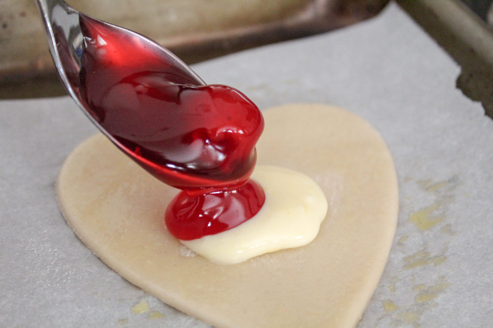
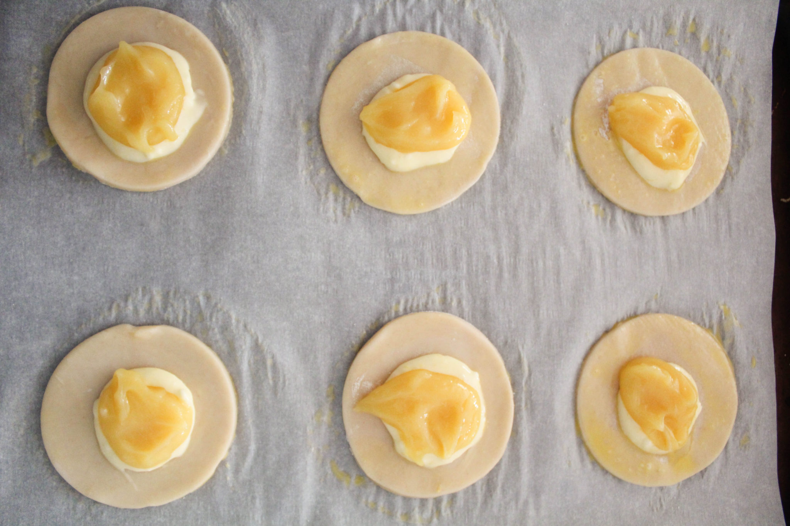
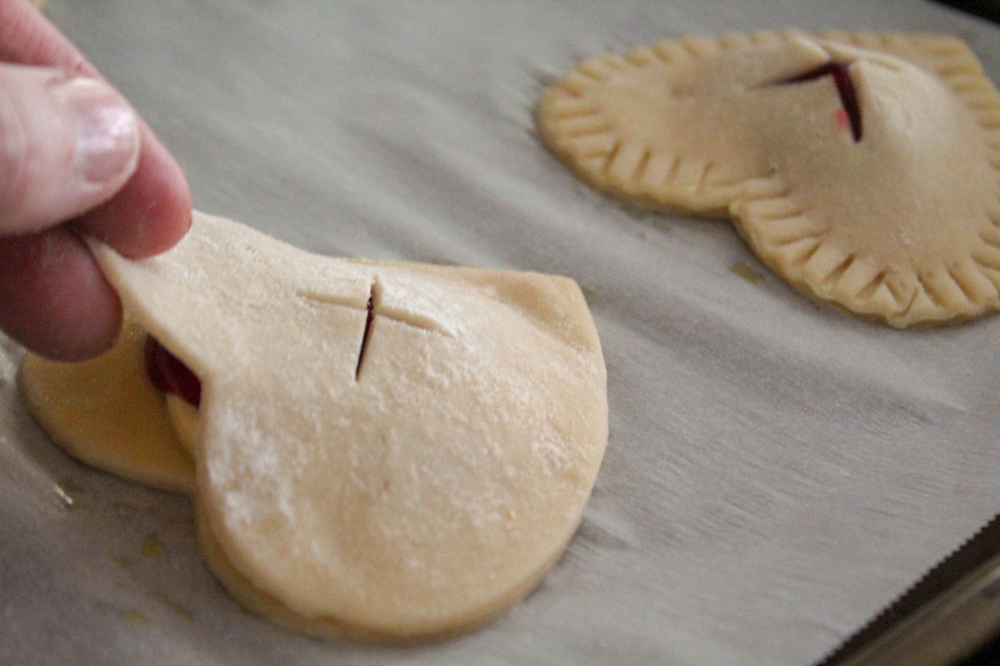
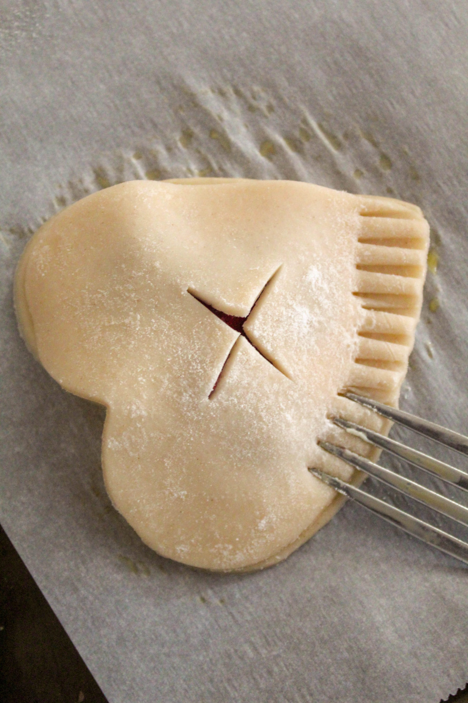
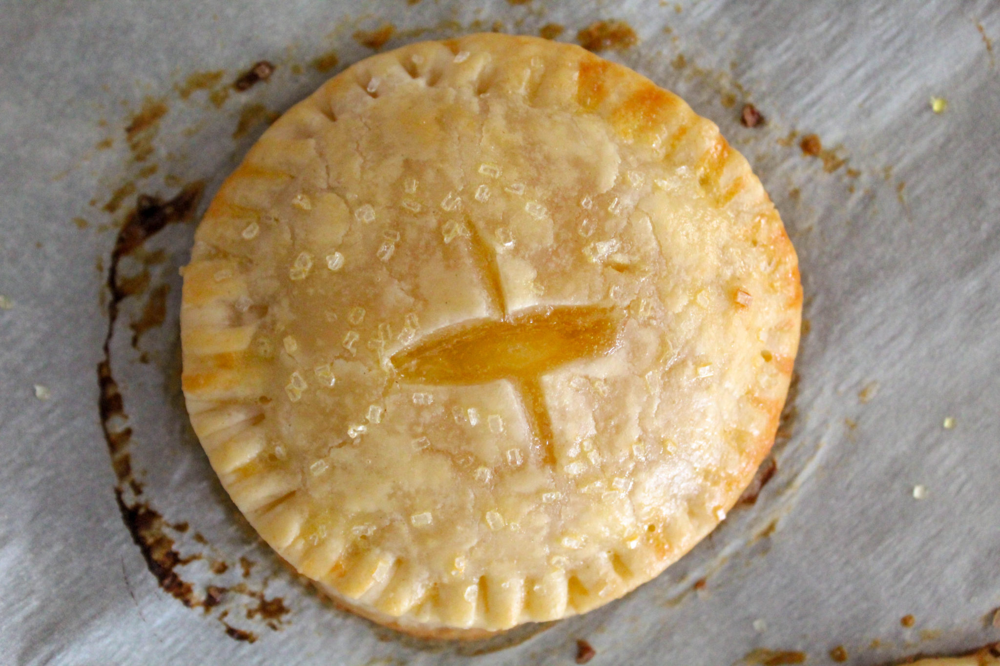
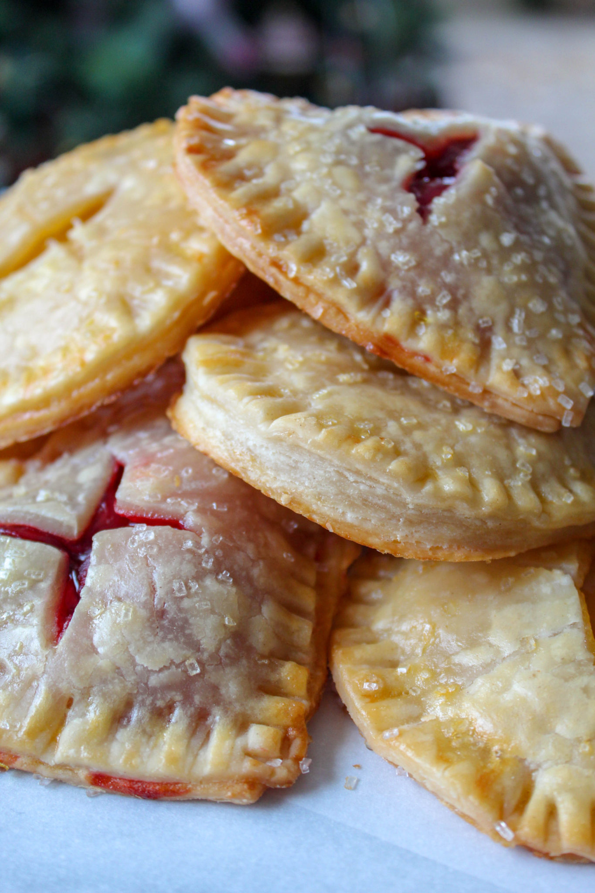

Ingrédients pour les tartes à la main :
2 paquets de pâte à tarte Pillsbury (4 croûtes)
1 boîte de garniture pour tarte aux cerises
1 pot de crème de citron (ou préparez votre propre – voir mon message précédent pour la crème d'agrumes au micro-ondes)
Garniture au fromage à la crème :
4 oz de fromage à la crème, à température ambiante
1/3 tasse de sucre granulé
1 c. à thé de zeste de citron
2 c. à thé de jus de citron
1 gros jaune d'œuf
Mélangez tous les ingrédients de la garniture jusqu'à obtenir une consistance lisse. (utilisez un batteur sur socle, un batteur à main ou mélangez à la cuillère). Réfrigérez jusqu'à ce que vous soyez prêt à assembler les tourtes à la main.
Tapissez 2 plaques à pâtisserie de papier parchemin. Préchauffez le four à 375 degrés.
Placez un cercle de pâte à tarte sur une surface légèrement farinée. NE roulez PAS avec un rouleau à pâtisserie – cela le rendra trop fin. Découpez 2 formes pour chaque tourte à la main. Reformez les restes de pâte à la même épaisseur et découpez d'autres formes. Mettre de côté.
Pour l'assemblage, ajoutez 1 œuf et 1 c. à soupe d'eau dans un petit bol, et mélangez ensemble. (facultatif – utilisez un peu de sucre grossier pour garnir).
Placez 6 formes de fond de tarte par plaque à pâtisserie. Badigeonnez légèrement de l'œuf battu.
Ajoutez environ 1 c. à thé de garniture au fromage à la crème au centre de chaque forme.
Pour les tourtes à la main aux cerises, placez environ 1 c. à thé de garniture pour tarte aux cerises (environ 3 cerises) sur la garniture au fromage à la crème. Ne pas trop remplir, sinon cela débordera.

Pour les tartes à la main à la crème de citron, placez environ 1 c. à
thé de crème de citron sur la garniture au fromage à la crème.

Pour la croûte supérieure, faites une incision en forme de "X" au
centre pour permettre à la vapeur de s'échapper. Recouvrez
chaque tarte à la main d'une croûte supérieure découpée assortie.

Scellez les bords à l'aide d'une fourchette, tout autour de la tarte.

Peinturer chaque tarte à la main avec le reste du mélange
d'œuf et saupoudrez de sucre grossier.
Faites cuire au four pendant 10 minutes, puis échangez les plaques
de cuisson de niveau dans le four. Poursuivez la cuisson pendant
encore 5 à 8 minutes jusqu'à ce qu'elles soient gonflées et dorées.

